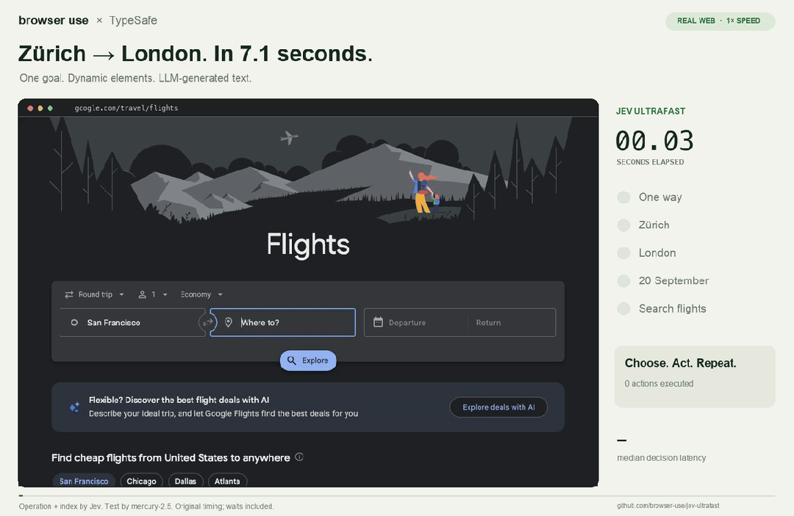
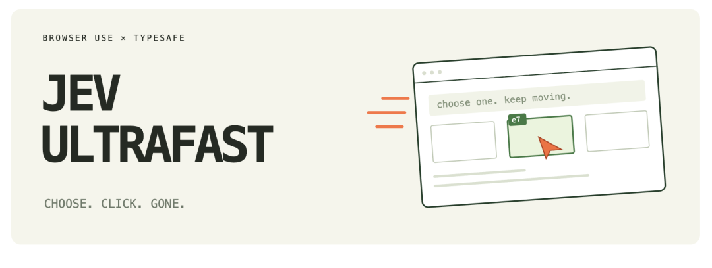
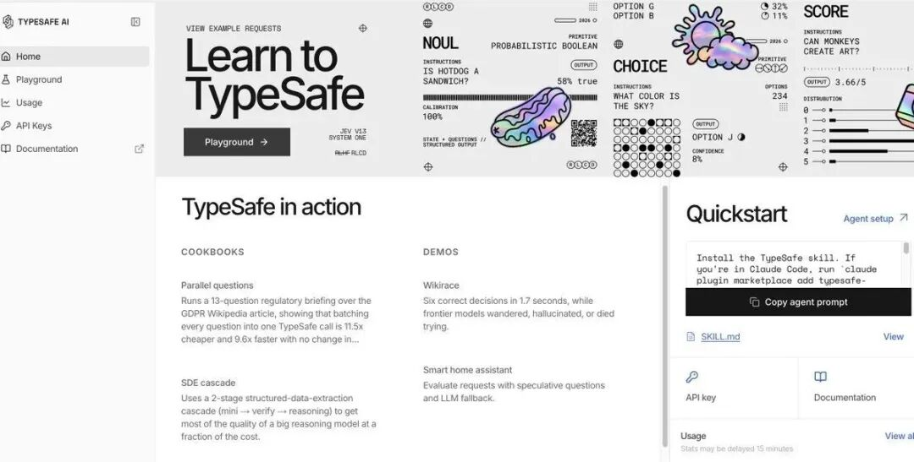

开源仅3天狂揽7.1K Star！Browser-Use 把 Jev 模型装进浏览器 Agent
来源：微信公众号 归档日期：2026-09-21 抓取状态：成功 原文字符：5398｜配图：5 张
摘要速览
- jev-ultrafast：browser-use 团队 9/17 开源，用「系统一决策模型」Jev（TypeSafe）替代 LLM 视觉推理驱动浏览器 agent，当天上 HN 首页。
- 核心思路「读 DOM 不看截图」：一次性拿到可见可交互控件并编号，交给 Jev 只做两个决策——做什么操作（CLICK/TYPE_TEXT/SELECT）+ 对哪个编号元素做。
- 性能：Google Flights 任务从 9.45s 降到 7.09s（快 25%），浏览器协议调用从 1092 次降到 101 次（降 91%），单次 API 成本约 $0.0039。
- Jev「系统一模型」：非 LLM，结构化决策毫秒级返回，快 100-200 倍、便宜 100-400 倍、不幻觉、永远带置信度。
核心内容
- 传统浏览器 agent 痛点：每步截图→图像理解→LLM 推理，慢/贵/不稳定；jev-ultrafast 改为读 DOM 结构化数据，去掉图像编解码和冗长对话链。
- 只在需要 TYPE_TEXT 时才调用小语言模型（如 inception/mercury-2.5）生成输入文本，能省则省。
- 大量提速细节：每快照只一次浏览器协议调用、执行前校验目标有效性、智能等待策略（combobox 输入后最多等 200ms）、后台标签页保持渲染、只给模型看可见文字。
- Jev 的采用速度：Vercel AI Gateway 上线 24h 被 13% 付费团队接入，是史上最快。
- 上手：git clone + uv sync，配 TYPESAFE_API_KEY 和 TEXT_MODEL_API_KEY，uv run jev 打开 8766 端口 Inspector。
可执行启发
- 范式启示：「系统一模型 + 结构化环境 = 便宜、快速、可靠的自动化」——先把世界翻译成 AI 能快速理解的结构化数据，再让模型做它最擅长的「选一个」。
- 浏览器自动化不必依赖 LLM 视觉推理，DOM 结构化读取 + 决策模型可大幅降本提速。
我的想法
（待补充）
原文沉淀
目录
前几天在 X 上刷到一条短视频，画面里一个浏览器窗口在 Google Flights 页面上飞一般地点击、选择、输入，从打开页面到列出苏黎世飞伦敦的航班，只用了 7.1 秒。

你可能会说，这有什么了不起的？我手动操作也差不多嘛。
但这个过程没有人类在操作。它是完全自主的 AI agent 在跑：自己识别页面上的每个按钮、输入框、下拉菜单，自己决定下一步点哪里、填什么、什么时候停下来。整个过程中，AI 的思考和决策全部包含在那 7 秒里。
对比一下传统的浏览器 agent——同样的任务，之前的基准测试是 9.45 秒。听起来差距不大？
但再看另一个数字：浏览器协议调用次数，从 1092 次直接降到了 101 次。这意味着每一次网络往返都被压缩到极致，agent 不再像个第一次用电脑的人一样，每做一步都要停下来"思考一下"。
这个项目就是 jev-ultrafast，由 browser-use 团队开发，2026 年 9 月 17 日在 GitHub 开源，当天就冲上了 Hacker News 首页。它的核心武器，就是这两天在 AI 圈炸了锅的 Jev。

📦 5 Parts + Conclusion
👉 滑动
先简单聊聊：什么是 Jev？
把 Jev 装进浏览器 agent
性能数据：数字说话
快速上手
PART ///
写在最后
01
PART
先简单聊聊：什么是 Jev？
如果你最近关注 AI 圈，肯定已经被 Jev 刷屏了。

简单说几句：
Jev 是 TypeSafe AI 开发的一种全新 AI 模型——注意，不是大语言模型（LLM）。
TypeSafe 的创始人 Diogo Almeida 是 OpenAI 前研究员、RLHF 训练方法的共同发明者，当年参与了 ChatGPT 的核心技术开发。离开 OpenAI 两年后，他带着 Jev 杀了回来。
Jev 和普通 LLM 到底有啥不一样？
传统 LLM 是 自回归（autoregressive） 的：一个 token 一个 token 地往外蹦。你问它一句话，它先想第一个字是什么，再想第二个，以此类推。所以 LLM 的回答越长越慢，代码里接个 LLM 做决策，动不动就是几百毫秒甚至几秒。
Jev 完全不走这条路。它是 TypeSafe 定义的「System One Model」——系统一模型。
这个名字借用了认知科学里的概念：人类大脑的系统一是快速、直觉、几乎不经过思考就能做出反应的那部分（比如开车时的条件反射）；系统二才是慢速、深度、需要推理的部分。
Jev 就是做系统一的事：给它一堆选项和上下文，它一次性返回一个结构化决策——选哪个、置信度多少、概率几何。
速度快 100-200 倍 端到端响应时间 70-500ms，直接干到毫秒级
便宜 100-400 倍 输入 token 只要 $0.042/百万（注意是百万，不是百万），输出 token 免费
不会幻觉 因为输出格式是你提前定义好的，Jev 不可能"瞎说"
永远带置信度 它会告诉你自己有多确定，低置信度的决策你可以选择不自动执行
Vercel 的 AI Gateway 数据显示，Jev 上线 24 小时内就被 13% 的付费团队接入，是 Gateway 历史上采用速度最快的模型。GPT-5.6 家族用了一天才达到 6%，Fable 5.1 还不到 2%。
一句话总结：Jev 不是用来聊天的，是用来做程序里的"聪明 if-else"的。
02
PART
把 Jev 装进浏览器 agent
browser-use 团队做了一件很聪明的事——他们把 Jev 的决策能力和浏览器代理结合了起来，解决了当前浏览器 agent 最痛的几个问题。
传统浏览器 agent 的烦恼
现在大多数 AI 浏览器 agent 的工作方式，说白了就是：每走一步都截个图，发给 LLM 问："我现在看到了啥？下一步该干啥？"
这导致几个致命问题：
1
慢到离谱：截图 + 图像理解 + LLM 推理，一个决策周期动辄几秒
2
贵：截图转 base64 塞进 LLM context，token 哗哗地烧
3
不稳定：LLM 对视觉信息的理解经常出错，按钮识别不准、位置偏差都是家常便饭
jev-ultrafast 直接掀翻了这张桌子。
它的核心思路：读 DOM，不看截图
网页本质上是什么？是一堆 DOM 节点：<button>、<input>、<select>……浏览器本身就知道页面上每个可交互元素的类型、位置、状态。
jev-ultrafast 做的事情很简单但很有效：
不截屏，直接读 DOM 通过一次性的浏览器调用，拿到页面上所有可见的、可交互的控件——按钮、输入框、下拉菜单、滚动条……每一个都带上类型、名称、当前值、DOM 引用
给每个元素编个号 观察结束后，得到一张类似这样的表：
`[1] button Change ticket type · Round trip [2] combobox Where from? · San Francisco [3] combobox Where to? · empty [4] textbox Departure · empty ... `
把这张表交给 Jev 让它只回答两件事——做什么操作（CLICK / TYPE_TEXT / SELECT） 和 对哪个编号的元素做。一次 TypeSafe 请求，两个决策头（operation head + target head），同时返回。
只有在需要打字时才动用小模型 如果 Jev 决定要 TYPE_TEXT，才会调用一个小语言模型（比如 inception/mercury-2.5）生成要输入的文本。能省则省。
这个设计太漂亮了。原来一个决策周期可能要好几秒（看图 → 理解 → 决策 → 执行 → 再看图……），现在压缩成：读 DOM → Jev 决策 → 执行 → 验证 → 循环。
中间没有图像编码解码，没有冗长的 LLM 对话链，Jev 的响应本身就是毫秒级的。
还有一堆"快"的小细节
除了核心架构，jev-ultrafast 还在很多小地方抠速度：
每个快照只调用一次浏览器协议 一次性拿到所有可见控件的信息
执行前校验目标有效性 点击前先检查元素有没有被遮挡、有没有动画在跑、页面是不是最新的——避免点了个寂寞还得重来
智能等待策略 在 combobox 里输入后最多等 200ms 看有没有下拉建议，其他交互最多等两帧或 50ms——不傻等，但也不莽上
后台标签页保持渲染 用 focus 模拟防止 Chrome 把后台页面的动画节流，不影响前台显示
只给模型看可见文字 屏幕外的文章正文、页脚、隐藏元素统统不进模型 context
03
PART
性能数据：数字说话
项目 README 里给出了真实测量结果，全部是 1× 速度录制，没有剪辑：
| 任务 | 耗时 |
|---|---|
| Google Flights：苏黎世→伦敦 | 7.073 秒 |
| Wikipedia：打开哥德尔不完备定理词条 | 2.798 秒 |
| 本地酒店搜索+筛选 | 1.896 秒 |
对比之前的版本：
| 指标 | 传统方式 | jev-ultrafast | 改善 |
|---|---|---|---|
| Google Flights 任务耗时中位数 | 9.450 s | 7.092 s | 快 25% |
| 浏览器协议调用次数中位数 | 1,092 | 101 | 降 91% |
更有意思的是成本估算——Google Flights 那次完整运行，TypeSafe API 调用成本大约 $0.0039（不到 3 厘钱）。因为 Jev 的输出 token 免费，而输入 token 实在太便宜了。
04
PART
快速上手
1. 克隆项目 + 同步依赖
`git clone https://github.com/browser-use/jev-ultrafast.git cd jev-ultrafast uv sync `
用的是 uv 包管理器，速度比 pip 快得多。如果没装 uv，先 pip install uv。
2. 配置 API Key
`cp .env.example .env `
然后编辑 .env，填上两个 key：
`TYPESAFE_API_KEY=你的TypeSafe API Key TEXT_MODEL_API_KEY=你的OpenRouter API Key（或其他兼容OpenAI的key） `
TYPESAFE_API_KEY：去 TypeSafe 官网 申请（目前需排队）
TEXT_MODEL_API_KEY：用于 TYPE_TEXT 操作时生成文本，demo 默认用的是 OpenRouter 上的 inception/mercury-2.5，也可以换 Gemini、GLM、DeepSeek，只要兼容 OpenAI 格式就行
3. 连接 Chrome
项目通过 Browser Harness 和 Chrome 通信，uv sync 的时候已经装好了。第一次运行前：
`uv run browser-harness --doctor `
按提示在 Chrome 里允许远程调试就行。
4. 跑 demo
`uv run jev `
浏览器打开 http://127.0.0.1:8766，点 Start demo → Run automatically 就能看它飞了。
Inspector 界面会实时显示：每个元素的编号、操作概率分布、目标元素概率、实际执行的动作。还可以点 Choose next 暂停，每一步确认后再继续。
5. 写自己的 agent
更有意思的是把它当库来用：
`from jev_ultrafast import Agent
with Agent( &quot;https://www.google.com/travel/flights?hl=en", &quot;Find one-way flights from Zurich to London on September 20, 2026, &quot; &quot;for one adult in economy. Stop when matching flight options are visible.&quot;, ) as agent: for state in agent.run(): print(state[&quot;elapsed_ms&quot;], state[&quot;status&quot;]) `
就这几行代码。给一个 URL 和一个自然语言目标，agent 自己跑。
示例脚本仓库里已经放好了：
`# Wikipedia 任务 uv run --env-file .env python examples/run.py \ --url https://en.wikipedia.org/wiki/Main_Page \ --goal 'Find and open the Wikipedia article about Gödel'"'"'s incompleteness theorems.'
航班搜索（带结果验证，不会真的订票）
uv run --env-file .env python examples/flights.py --keep-open `
///
LAST
写在最后
jev-ultrafast 最让我兴奋的，不是那个 7 秒的数字，而是它证明了一件事：浏览器 agent 不一定要靠 LLM 的"视觉+推理"来驱动。
传统思路是"给 AI 看整个世界，让它自己搞清楚怎么玩"。jev-ultrafast 换了个方向：先把世界翻译成 AI 能快速理解的结构化数据，再让 AI 做它最擅长的事——选一个。
这个范式上的变化，可能比 25% 的速度提升更有价值。它意味着浏览器 agent 的成本可以降到几乎为零，延迟可以压到用户感知不到的程度，可靠性可以因为不依赖 LLM 的"灵感"而大幅提升。
Jev 也好，jev-ultrafast 也罢，都还在非常早期。但方向已经摆出来了：系统一模型 + 结构化环境 = 便宜、快速、可靠的自动化。
这可能不是 AGI，但这是我们离"AI 帮我们干活"更近了一大步。
项目地址：https://github.com/browser-use/jev-ultrafast
TypeSafe AI：https://typesafe.ai/

如果本文对您有帮助，也请帮忙点个 赞👍 + 在看 哈！❤️
在看你就赞赞我！
归属：归属：归属：归属：[[02-输入/按主题/工具与技术/_index|工具与技术]]
归属：[[02-输入/按主题/工具与技术/_index|工具与技术]]